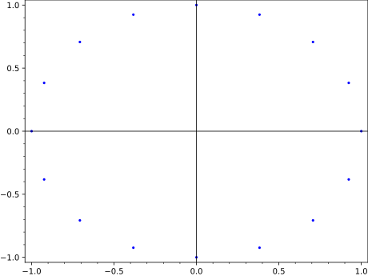
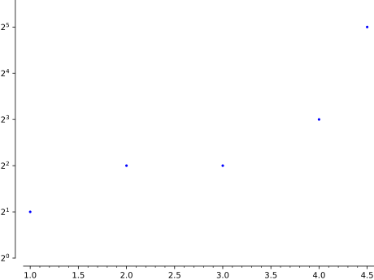
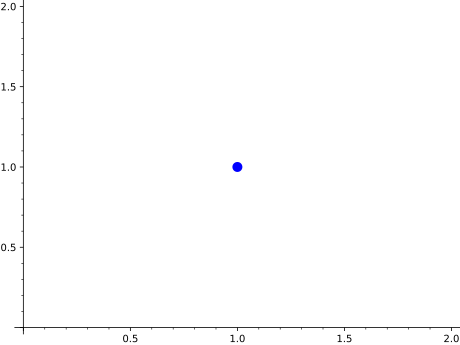
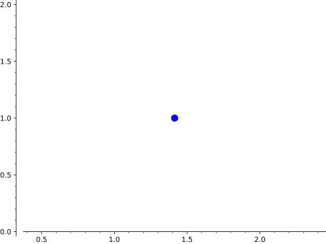

Primitive class for the point graphics type. See point?, point2d?
or point3d? for information about actually plotting points.
INPUT:
xdata – list of x values for points in Point object
ydata – list of y values for points in Point object
options – dict of valid plot options to pass to constructor
EXAMPLES:
Note this should normally be used indirectly via point() and friends:
sage: fromsage.plot.pointimportPointsage: P=Point([1,2],[2,3],{'alpha':.5})sage: PPoint set defined by 2 point(s)sage: P.options()['alpha']0.500000000000000sage: P.xdata[1, 2]
Note that keywords passed must be valid point3d options:
sage: A=point((1,1),size=22)sage: a=A[0];aPoint set defined by 1 point(s)sage: b=a.plot3d()sage: b.size22sage: b=a.plot3d(pointsize=23)# only 2D valid optionsage: b.size22sage: b=a.plot3d(size=23)# correct keywordsage: b.size23
Extra options will get passed on to show(), as long as they are valid:
sage: point([(cos(theta),sin(theta))# needs sage.symbolic....: forthetainsrange(0,2*pi,pi/8)],frame=True)Graphics object consisting of 1 graphics primitivesage: point([(cos(theta),sin(theta))# These are equivalent # needs sage.symbolic....: forthetainsrange(0,2*pi,pi/8)]).show(frame=True)

For plotting data, we can use a logarithmic scale, as long as we are sure
not to include any nonpositive points in the logarithmic direction:
sage: point([(1,2),(2,4),(3,4),(4,8),(4.5,32)],scale='semilogy',base=2)Graphics object consisting of 1 graphics primitive

Since Sage Version 4.4 (github issue #8599), the size of a 2d point can be
given by the argument size instead of pointsize. The argument
pointsize is still supported:
sage: point((3,4),size=100)Graphics object consisting of 1 graphics primitive
sage: point((3,4),pointsize=100)Graphics object consisting of 1 graphics primitive
We can plot a single complex number:
sage: point(1+I,pointsize=100)# needs sage.symbolicGraphics object consisting of 1 graphics primitivesage: point(sqrt(2)+I,pointsize=100)# needs sage.symbolicGraphics object consisting of 1 graphics primitive


We can also plot a list of complex numbers:
sage: point([I,1+I,2+2*I],pointsize=100)# needs sage.symbolicGraphics object consisting of 1 graphics primitive